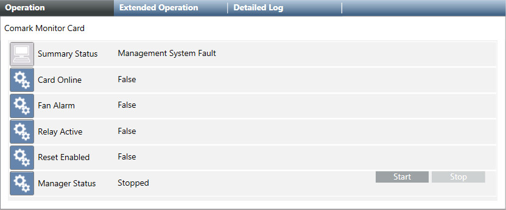

Comark Monitor Card Driver Management
Selecting the Comark Monitor Card node in System Browser, the Operation tab displays the Manager Status property and the associated Start and Stop commands.

Manager Status and Commands | ||
Manager Status | When the Comark card driver… | Available Command |
Stopped | Is not running. | Start |
Started | Starts and is properly running. | Stop |
Failed | Starts, but there is no connection to the station (for example, station not reachable or disconnected). | Stop |
Technical Notes
- If you try to start the Comark driver with an invalid or incomplete configuration or the hosting station is not reachable, the Manager Status property of the driver becomes
Failed, and aFaultevent is generated. - If the station is disconnected, the Manager Status property becomes
Failed, and aTroubleevent is generated. - When the Manager Status property is
Failed, you cannot modify the configuration (import operations are not allowed). - It is not possible to stop the Comark driver during import operations.
- After configuring the Comark Card, power down the station and disconnect the power plug for at least 3 minutes to allow for a complete capacitor discharge. After that, reconnect power, restart the station, and check that the Comark card runs properly.